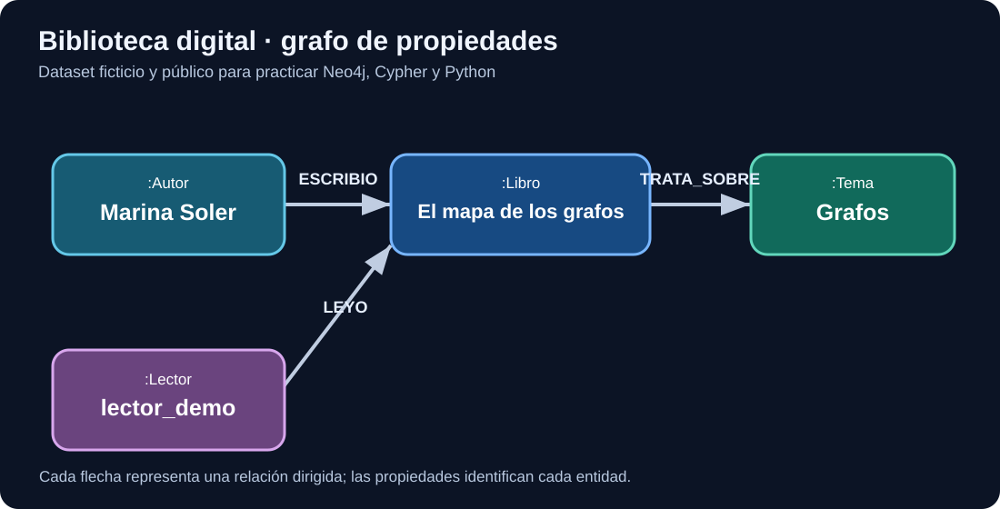

Academia abierta · Formación técnica en español
Aprende grafos.
Entiende cada paso.
De programar con Python a modelar grafos, consultar Neo4j y comprender RDF, ontologías y grafos de conocimiento. Un recorrido explicado con ejemplos reales de código y datos ficticios.
Empezar por la primera claseSin conocimientos previos de grafos. Contenido en desarrollo y revisión progresiva.

Aprenderás con un mismo caso: una biblioteca completamente ficticia.
TU PUNTO DE PARTIDA
Ir a la clase Sigue tu aprendizaje a tu ritmo
Empieza por la semana 01 y avanza por los bloques en orden.
Ruta de aprendizaje
Un temario, siete bloques
Abre un bloque para ver sus semanas. Solo verás las lecciones que pertenecen a ese bloque: sin listas interminables ni botones repetidos.
Las 24 lecciones están publicadas con profundidad desigual; seguimos ampliándolas y verificándolas. La ruta avanzada de competencias identifica especializaciones y contenidos pendientes.